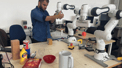
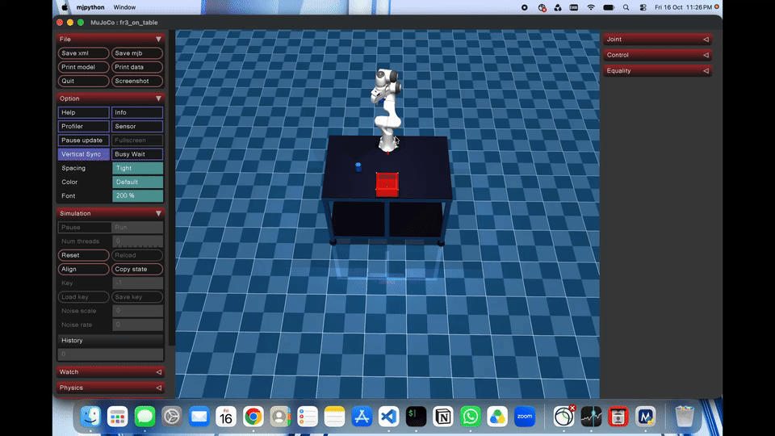
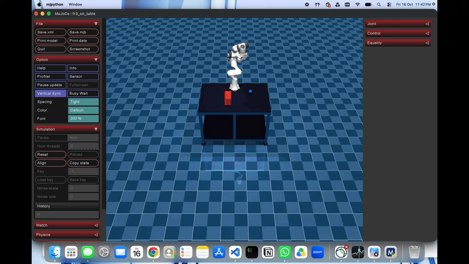

Task-Parameterized Gaussian Process Transport
Abstract
In robot Learning from Demonstration (LfD), acquiring dynamic manipulation policies that generalize to novel task environments—characterized by shifted target objects, moving containers, or changing reference frames—is a fundamental challenge. Traditional approaches such as Task-Parameterized Gaussian Mixture Models (TP-GMM) rely on rigid or affine coordinate frame transformations and lack principled probabilistic uncertainty estimates in unvisited regions.
This project introduces Task-Parameterized Gaussian Process Transport (TP-GPT). By formulating the spatial transformation between demonstration and query environments as continuous transportation maps governed by Gaussian Process Regression (GPR), the framework smoothly warps learned dynamical system vector fields, attractor equilibria, and velocities across arbitrary workspace configurations. The system also quantifies spatial uncertainty, enabling the robot to modulate its mechanical compliance or initiate cautious execution in out-of-distribution regions. The framework is validated across both physical Franka Emika / FR3 hardware and high-fidelity MuJoCo physics simulation.
Methodology
The system integrates keypoint-based task parameterization, non-parametric spatial transport maps, and stability-preserving dynamical systems:
Task Parameterization & Keypoint Formulation
- Extracted 3D workspace keypoints representing landmark objects, target containers, and the robot base.
- Captured nominal kinesthetic demonstrations anchored to tracked visual fiducials (ArUco / AprilTags).
- Formulated task parameter variations as continuous spatial displacements across keypoint coordinates.
- Integrated real-time Cartesian pose estimation at 30 Hz for dynamic tracking.
Gaussian Process Transportation Maps
- Modeled spatial transformation fields via multi-output Gaussian Process Regression (GPR).
- Employed stationary covariance kernels (Matérn 5/2) to capture smooth non-linear deformations.
- Conditioned the GP displacement field on observed keypoint displacements between demonstration and query states.
- Derived analytical closed-form posterior mean and predictive covariance in real time.
Preserving Dynamical System Stability
- Encoded nominal manipulation trajectories as autonomous dynamical systems with guaranteed goal convergence.
- Transported velocity vector fields via forward kinematic Jacobian mappings to preserve phase-portrait topology.
- Ensured smooth attractor convergence without generating discontinuities or artificial limit cycles.
- Retained boundary condition compliance and obstacle clearance across novel spatial layouts.
Uncertainty-Aware Compliant Control
- Computed Bayesian predictive variance across the manipulation workspace.
- Modulated Cartesian stiffness parameters in joint-torque impedance controllers based on local variance.
- Enabled high-stiffness precision manipulation near known targets and compliant interaction in unfamiliar regions.
- Integrated safety thresholding to trigger adaptive replanning or velocity throttling when uncertainty is high.
Real-World Robotic Deployment: Franka Emika Manipulator
The proposed framework was deployed and validated on a 7-DoF physical Franka robotic arm. Below, the kinesthetic demonstration phase is compared directly with the autonomous generalization execution when the target object is relocated across the table:

The operator guides the Franka arm end-effector through the nominal manipulation task, capturing 7-DoF joint kinematics and landmark keypoints anchored to the marked target object.

The object is moved to an unvisited location across the workspace table. Gaussian Process Transport computes the continuous spatial mapping, accurately transporting the dynamical policy to execute the manipulation without manual retuning.
Physics Simulation Benchmarking: MuJoCo Environment
To evaluate generalization performance under multi-body dynamics, contact interactions, and varying boundary conditions, the architecture was benchmarked in a custom MuJoCo simulation environment (fr3_on_table). The simulated Franka Research 3 (FR3) robot executes a precision pick-and-place task:

The baseline pick-and-place task executed in MuJoCo, where the Franka Research 3 arm approaches the blue cylinder, grasps it cleanly, and transfers it into the red container at default coordinates.

Simultaneous shift of target cylinder and container positions. The Gaussian Process Transport model computes the multi-frame transportation field, enabling the FR3 to execute a collision-free pick-and-place sequence with zero retraining.
Key Innovations
Non-Linear Spatial Warping
Replaces rigid affine coordinate frame approximations with continuous diffeomorphic deformation fields governed by Gaussian Processes.
Calibrated Uncertainty Estimates
Leverages Bayesian posterior covariance to evaluate model confidence across the workspace, enabling adaptive impedance modulation.
One-Shot Skill Adaptation
Generalizes dynamic trajectories to new task configurations instantly from single demonstrations without retraining neural networks.
Attractor Flow Preservation
Diffeomorphic velocity mapping via kinematic Jacobians ensures preservation of dynamical stability and asymptotic goal convergence.
Impact and Future Directions
This framework demonstrates how non-parametric probabilistic transportation bridges the gap between demonstration efficiency and generalization in robotics:
Unified Sim-to-Real
Seamless policy portability between MuJoCo dynamic simulation and physical Franka 7-DoF hardware.
Generalizable Manipulation
Enables robots to operate in unstructured environments with dynamic multi-object displacements.
Safe Human-Robot Collaboration
Uncertainty-modulated Cartesian stiffness ensures compliant interaction in unmodeled workspace zones.
Future Enhancements
- Integration of active collision avoidance fields into the transported dynamical system
- Scaling to multi-arm bimanual coordination tasks with coupled reference frames
- Online incremental Gaussian Process updating for adaptive real-time trajectory correction
- Vision-language integration to automatically assign semantic keypoint associations
Conclusion
Task-Parameterized Gaussian Process Transport (TP-GPT) establishes an effective and mathematically principled foundation for robot skill generalization. By moving beyond conventional rigid-frame assumptions, the framework achieves smooth, non-linear deformation of dynamical vector fields while maintaining stability guarantees and quantifying spatial uncertainty. Validated across physical Franka manipulators and MuJoCo simulation environments, this methodology demonstrates strong sample efficiency and reliability for dynamic manipulation in real-world scenarios.